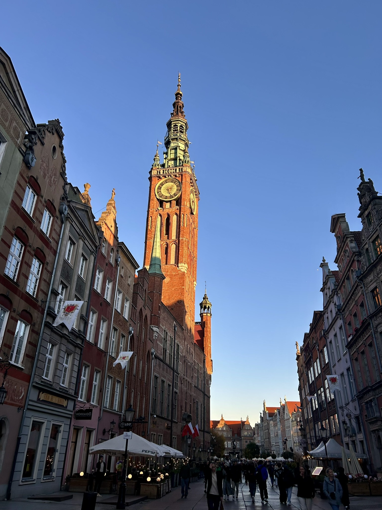

Pierwsza wzmianka o Gdańsku pochodzi ze spisanego po łacinie w 999 roku Żywotu świętego Wojciecha.
Opisuje on wizytę biskupa Wojciecha na tym terenie wiosną 997 i tę datę często przyjmuje się umownie jako początek dziejów miasta,
chociaż już w VII wieku była tu osada rybacka.
W dokumencie tym Jan Kanapariusz nazwę Gdańska zapisał w zlatynizowanej formie urbe Gyddanyzc.
Miejscowość pod zlatynizowaną nazwą Gdanczk wymieniona jest w łacińskim dokumencie wydanym w Lubiniu w 1281 roku
sygnowanym przez księcia pomorskiego Mściwoja II
Większość gdańszczan doskonale kojarzy herb miasta. Są na nim oczywiście dwa lwy, które patrzą na siebie. Ale czy wszystkie?
Gdańsk od dłuższego czasu był solą w oku władcy Prus, Fryderyka II.
By w końcu wymusić od niepokornego grodu uległość, niemiecki monarcha postanowił w 1765 roku otworzyć komorę celną w Kwidzynie.
Choć w niedługim czasie odbiło się to dość znacznie na sytuacji ekonomicznej Gdańska,
mieszczanie nie zamierzali rezygnować ze swej wolności, ani tym bardziej odwracać się od Rzeczpospolitej.
Swą postawę postanowili zatem zamanifestować - zapadła decyzja by przyozdobić miejski ratusz nowym herbem.
Tu warto zaznaczyć, że w owych czasach Gdańsk mógł się poszczycić kamieniarzami najwyższej, światowej klasy.
Najznamienitszym z nich był zaś Daniel Eggert. Ulubionymi postaciami, jakie rzeźbił, były lwy.
Mistrz poczuł się niezwykle wyróżniony, że to właśnie jego spotkał taki zaszczyt i od razu zabrał się do pracy.
Wspomnijmy, tak w ramach oczywistego przypomnienia, jak wygląda herb Gdańska - znajduje się na nim tarcza z koroną,
pod którą umiejscowione są dwa krzyże. Całość "trzymana" jest przez dwa lwy, spoglądające na siebie.
Oczywiście każdy artysta pragnie by jego dzieło było najpiękniejsze i jedyne w swoim rodzaju.
Podobnie było i tym przypadku. Po kilku tygodniach wytężonej pracy zadanie zostało wykonane.
Ruszyły zatem przygotowania do uroczystego odsłonięcia nowego dzieła.
Miejscy radni postanowili zrobić z tego huczne wydarzenie, które miało podtrzymać na duchu mieszczan.
Gdy jednak w kulminacyjnym momencie osłonięto wynik pracy mistrza Daniela,
początkowy zachwyt ustąpił miejsca zdziwieniu i niedowierzaniu.
No bo jak to tak - korona jest, krzyże i tarcza również, ale lwy nie spoglądają na siebie, tylko w jednym kierunku!
Czy to możliwe, żeby mistrz aż tak się pomylił? Coraz głośniejsze stawały się głosy oburzenia
i nie wiadomo jak to by się ostatecznie dla Daniela skończyło, gdyby z tłumu nie wystąpił stary mistrz kamieniarstwa Krzysztof.
Spojrzał on na herb, odwrócił się w stronę mieszczan i rzekł te słowa "czyż nie widzicie w którą stronę patrzą nasze lwy?
Patrzą tam, gdzie zaczyna się Droga Królewska, ku Wyżynnej i Złotej Bramie. Stamtąd, od strony Rzeczpospolitej, od króla Stanisława,
przyjdzie pomoc i wsparcie dla naszego Gdańska".
Wszyscy zgromadzeni podążyli wtedy za spojrzeniem lwów i dopiero wtedy zrozumieli zamysł Daniela.
Choć jego dzieło faktycznie podniosło ducha u mieszczan, lwy nadaremno wypatrywały polskiego władcy.
Oczekiwana pomoc nie nadeszła, a niedługo potem Gdańsk dostał się pod pruską strefę wpływów.
Jednak każda legenda powinna posiadać dobre zakończenie, więc nie inaczej jest i tym razem,
bo ostatecznie po wielu wielu latach Gdańsk powrócił do Rzeczpospolitej.
A Lwy? Cóż, dalej zdobią fasadę Ratusza Miejskiego, patrząc razem w tym samym kierunku.

Autor zdjęć: Gabriela Wróbel
Legenda o herbie Gdańska
Tekst o Gdańsku